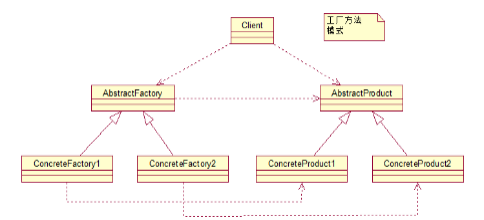
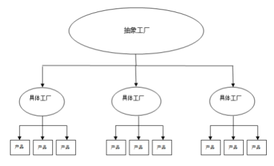
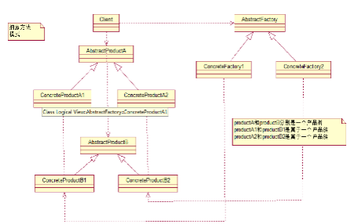

实现了创建者和调用者分离，工厂模式分为简单工厂、工厂方法、抽象工厂模式
# 二、工厂模式好处
工厂模式是我们最常用的实例化对象模式了，是用工厂方法代替new操作的一种模式。
利用工厂模式可以降低程序的耦合性，为后期的维护修改提供了很大的便利。
将选择实现类、创建对象统一管理和控制。从而将调用者跟我们的实现类解耦。
简单工厂模式相当于是一个工厂中有各种产品，创建在一个类中，客户无需知道具体产品的名称，只需要知道产品类所对应的参数即可。但是工厂的职责过重，而且当类型过多时不利于系统的扩展维护。
public interface Car {
public void run();
}public class AoDi implements Car {
public void run() {
System.out.println("我是奥迪汽车..");
}
}public class JiLi implements Car {
public void run() {
System.out.println("我是吉利汽车...");
}
}public class CarFactory {
public static Car createCar(String name) {
if (StringUtils.isEmpty(name)) {
return null;
}
if(name.equals("奥迪")){
return new AoDi();
}
if(name.equals("吉利")){
return new JiLi();
}
return null;
}
}public class Client01 {
public static void main(String[] args) {
Car aodi =CarFactory.createCar("奥迪");
Car jili =CarFactory.createCar("吉利");
aodi.run();
jili.run();
}
}
工厂方法模式Factory Method，又称多态性工厂模式。在工厂方法模式中，核心的工厂类不再负责所有的产品的创建，而是将具体创建的工作交给子类去做。该核心类成为一个抽象工厂角色，仅负责给出具体工厂子类必须实现的接口，而不接触哪一个产品类应当被实例化这种细节。
public interface Car {
public void run();
}public interface CarFactory {
public Car createCar();
}public class AoDi implements Car {
public void run() {
System.out.println("我是奥迪汽车..");
}
}public class JiLi implements Car {
public void run() {
System.out.println("我是吉利汽车...");
}
}public class JiLiFactory implements CarFactory {
public Car createCar() {
return new JiLi();
}
}public class AoDiFactory implements CarFactory {
public Car createCar() {
return new AoDi();
}
}public class Client {
public static void main(String[] args) {
Car aodi = new AoDiFactory().createCar();
Car jili = new JiLiFactory().createCar();
aodi.run();
jili.run();
}
}抽象工厂简单地说是工厂的工厂，抽象工厂可以创建具体工厂，由具体工厂来产生具体产品。相当于零件工厂和组装工厂。


//发动机
public interface Engine {
void run();
void start();
}
class EngineA implements Engine {
public void run() {
System.out.println("转的快!");
}
public void start() {
System.out.println("启动快,自动档");
}
}
class EngineB implements Engine {
public void run() {
System.out.println("转的慢!");
}
public void start() {
System.out.println("启动快,手动档");
}
}//座椅
public interface Chair {
void run();
}
class ChairA implements Chair{
public void run() {
System.out.println("可以自动加热!");
}
}
class ChairB implements Chair{
public void run() {
System.out.println("不能加热!");
}
}public interface CarFactory {
// 创建发动机
Engine createEngine();
// 创建座椅
Chair createChair();
}public class JiLiFactory implements CarFactory {
public Engine createEngine() {
return new EngineA();
}
public Chair createChair() {
return new ChairA();
}
}public class Client002 {
public static void main(String[] args) {
CarFactory carFactory=new JiLiFactory();
// 现组装一个发动机
Engine engine=carFactory.createEngine();
engine.run();
engine.start();
// 再组装一个座椅
ChairA chairA=carFactory.createChair();
chairA.run();
}
}个人博客 蜗牛